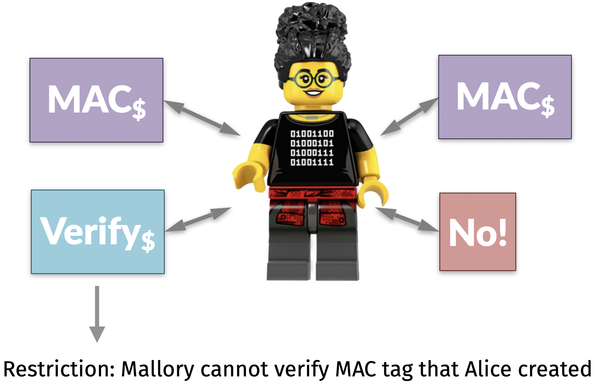
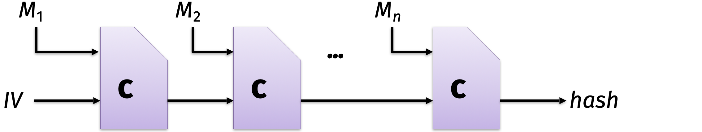
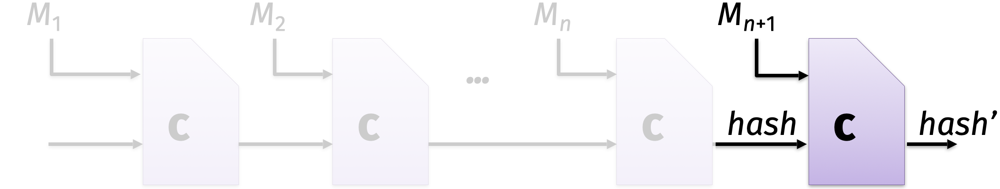
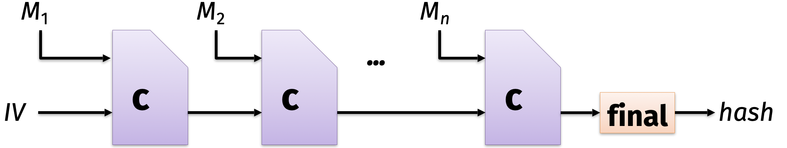
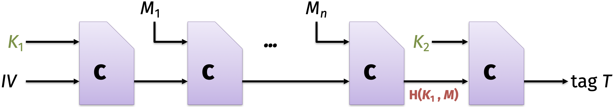

!openssl s_client -connect example.com:443 -servername example.com -tls1_3 -cipher 'ECDHE-ECDSA-AES256-SHA384' < /dev/null 2>/dev/null | grep -E 'Cipher'New, TLSv1.3, Cipher is TLS_AES_256_GCM_SHA384By the end of today’s lecture, you will learn:
Every cryptosystem attempts to provide some or all of the “CIA triad.”
A pseudorandom generator is:
Using a cryptographic hash function and a seed \(k\), we can pseudorandomly generate many secrets \[H(k, 0), H(k, 1), H(k, 2), \ldots\]
This idea is effective thanks to the properties of the underlying hash function.
Because \(H\) is preimage resistant, even if one secret (say, \(H(k, 2)\)) happens to be revealed to the world, nobody can use it to reverse-engineer the main seed \(k\)
Because \(H\) acts like a random oracle, the rows of the truth table of \(H\) act as if they are independent, so no two secrets have any discernible connection to each other
If an adversary [Mallory] has not explicitly queried the oracle on some point \(x\), then the value of \(H(x)\) is completely random… at least as far as [Mallory] is concerned.
– Jon Katz and Yehuda Lindell, Introduction to Modern Cryptography
The actual function you need to run here is not quite \(H\), but rather a slightly more complicated construction called HMAC applied to the hash function.

Here is our motivating question for today:
On the Internet, how do Alice and Bob know that they are talking to each other?
“Cryptography is how people get things done when they need one another, don’t fully trust one another, and have adversaries actively trying to screw things up.”
– Ben Adida
To simplify things for today:
Question. How would you solve this problem?
Construction. Here is one solution attempt that relies on pseudorandomness.
Note that the message itself is sent in the clear. We are not considering message confidentiality today.
Interactive question. Does this construction guarantee to Bob that the message came from Alice?
Answer. No, but we have made some progress.
New construction. Let’s make a small change to the prior attempt.
Interactive question. Does the new construction guarantee to Bob that the message came from Alice?
Answer. Yes, this should work! (Well, subject to some caveats about replay attacks and the design of \(H\) that we will discuss later today.)
Let’s take a moment to appreciate what we have built.
Accordingly, this primitive is referred to by cryptographers as a message authentication code, or MAC.

As the name suggests: Alice and Bob remember the same key \(sk\).
Our MAC satisfies all of Kerckhoffs’ principles.
Example. Let me show you how easy MACs are to use. You have been using them your entire life, with most websites you have ever visited, without even knowing it!
!openssl s_client -connect example.com:443 -servername example.com -tls1_3 -cipher 'ECDHE-ECDSA-AES256-SHA384' < /dev/null 2>/dev/null | grep -E 'Cipher'New, TLSv1.3, Cipher is TLS_AES_256_GCM_SHA384This web connection uses a hash-based MAC, using the hash function from the SHA-2 family that has an output length of 384 bits.
Let’s define the operations and security requirements for a MAC.
Interactive question. How many operations do Alice and Bob need? That is, if you were to write a Python class MAC to run everything in our New Construction, then how many methods (or functions) would you write?
Informally, a MAC has three operations.
Informally, a MAC has two security requirements.
Correctness: honest receiver Bob can verify that Alice was the sender of the message and that the message was not tampered in transit
Unforgeability: the tag is bound to the message, and Mallory cannot use it to forge a tag for any other message
There are also three limitations of MACs. These are issues that we will not fix, but rather will require that some other protocol must deal with.
Replay attacks: if Alice sends a message + tag to Bob and he verifies it, then Mallory can later re-send the same message + tag and it will pass Bob’s verification check again
Staleness: if Alice sends a message + tag but Mallory intercepts it in transit, then Mallory can deliver it days/months/years later and it will pass Bob’s verification check
Lack of confidentiality: MACs do not attempt to hide the message \(m\) (we will need encryption for that)
Now, let’s use math to specify the operations and requirements more precisely.
In this course, I will often use Greek letters (like \(\kappa\) and \(\tau\)) to denote the length of a bytestring. Each construction must specify the specific lengths of all bytestrings used.
Definition 5.1 (MAC) A message authentication code contains three operations.
KeyGen\(()\): takes no input, samples a symmetric secret key \(k\) — often, uniformly at random from \(\{0,1\}^\kappa\)Tag\({}_k(m)\): produces a tag \(t \in \{0, 1\}^\tau\)Verify\({}_k(m, t)\): returns a boolean true or falseAll three operations should be efficiently computable. Moreover, the MAC must satisfy two security requirements: correctness and EU-CMA.
Correctness means that for every symmetric secret key produced by KeyGen, any output of Tag is subsequently accepted by Verify.
In math: \(\texttt{Verify}_k( m, \text{Tag}_k(m))=\) true for all keys \(k\), messages \(m\), and randomness used in Tag (if any).
Existential unforgeability under a chosen message attack (EU-CMA) is defined using a thought experiment in which Alice plays a game with Mallory. Even after Alice tags many messages of Mallory’s choice, Mallory still cannot forge a tag for a new message.

EU-CMA is a very strong claim: we give Mallory the power to choose
and she still cannot forge any new message and tag with Verify\({}_k(m^*, t^*) =\)true. In other words, Mallory will never be able to fool Bob into accepting a message (even if the message contents are meaningless).
Now that we have formally specified the objectives of a MAC, let’s write our new construction more precisely. It relies on a hash function \(H\).
KeyGen: Alice and Bob toss coins to choose a uniformly random bytestring \(k\)
Tag\({}_k(m)\): Alice computes \(t = H(k, m)\), and she sends \((m, t)\) to Bob
Verify\({}_k(m, t')\): Bob checks whether \(t' \overset{?}{=} H(k, m)\)
Note that the lengths \(\kappa\) and \(\tau\) are both fixed constants, but they do not have to be the same.
Theorem 5.1 If \(H\) acts like a random oracle, then this MAC construction satisfies Correctness and EU-CMA.
Note that this is a conditional theorem: the MAC is secure if the hash function is. We saw this idea also when studying message commitments.
If \(H\) acts like a random oracle, then this construction is a secure message commitment protocol.
This is a powerful idea that cryptographers use to build many elegant protocols from a few basic primitives that withstand the test of cryptanalysis.

To explain the full details of the hash-based MAC construction used in practice, I need to tell you some more information about the SHA-2 family of hash functions.
As we discussed in Lecture 3, SHA-256 uses a Merkle–Damgård construction with two parts:

While this design has many benefits, it is vulnerable to a length extension attack.

Intuitively, the issue is that Mallory could extend
\[ H(k, \texttt{ b"Hello"}) \longrightarrow H(k, \texttt{ b"Hello world"})\]
without ever knowing \(k\). This would break the MAC’s unforgeability.

Now that we understand the problem, the fix is simple—just do something different at the end to stop length extensions. This is called finalization.

This construction comes from a 1996 paper by Mihir Bellare, Ran Canetti, and Hugo Krawczyk.
Using some clever tricks, they also designed a variant called HMAC that only needs one key.
Theorem 5.2 If the compression function \(C\) is pseudorandom, then HMAC satisfies Correctness and EU-CMA. (The proof is in this paper by Mihir Bellare.)
Here is our final construction for a hash-based MAC.
KeyGen: sample a uniformly random bytestring \(k\) that is 256 bits (32 bytes) long
Tag\({}_k(m)\): compute \(t = \texttt{HMAC}(k, m)\)
Verify\({}_k(m, t')\): return true if \(t' =\texttt{HMAC}(k, m)\), otherwise return false
HMAC is a popular MAC used today in web browsers and in secure messaging applications like WhatsApp.
“Clients exchange messages that are protected with a Message Key using
AES256inCBCmode for encryption andHMAC-SHA256for authentication.”
That said, HMAC is not the only way to build a MAC. It is the only one we will study in this course, but that there are other constructions that satisfy Definition 5.1. They also have
KeyGen, MAC\({}_{k}\), and Verify\({}_{k}\)MACs are used everywhere to protect data at rest in file systems and in transit over the Internet. Modern cryptography follows the Cryptographic Doom Principle:
“If you have to perform any cryptographic operation before verifying the MAC on a message you’ve received, it will somehow inevitably lead to doom!” – Moxie Marlinspike
We will use the Cryptographic Doom Principle extensively in this course, especially when discussing web security and secure messengers in Unit 3.
{kind=link}